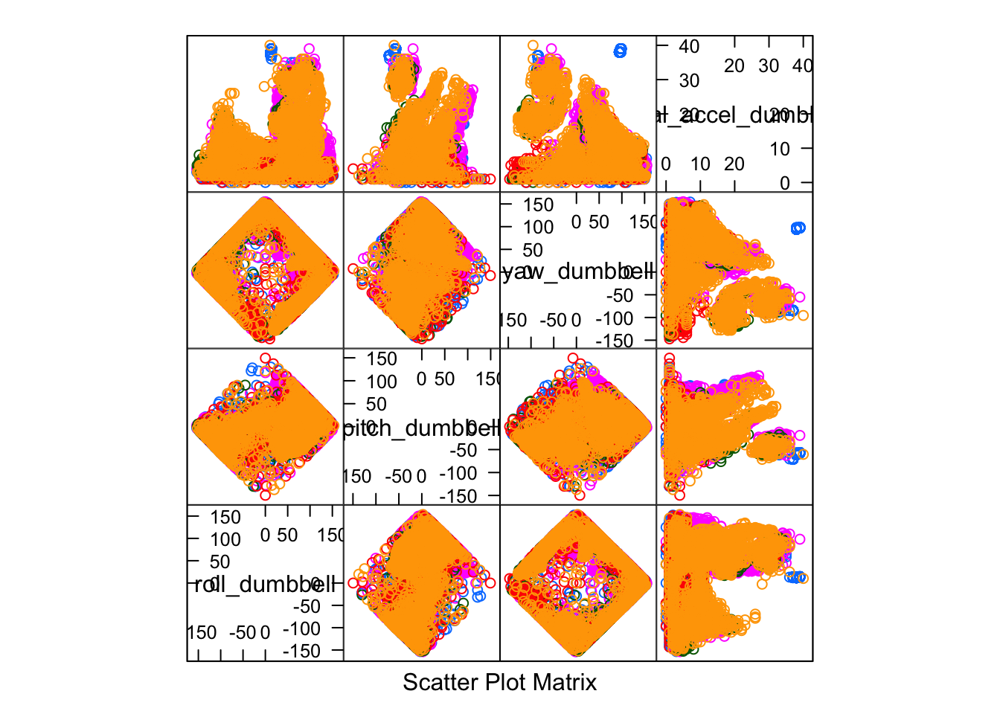
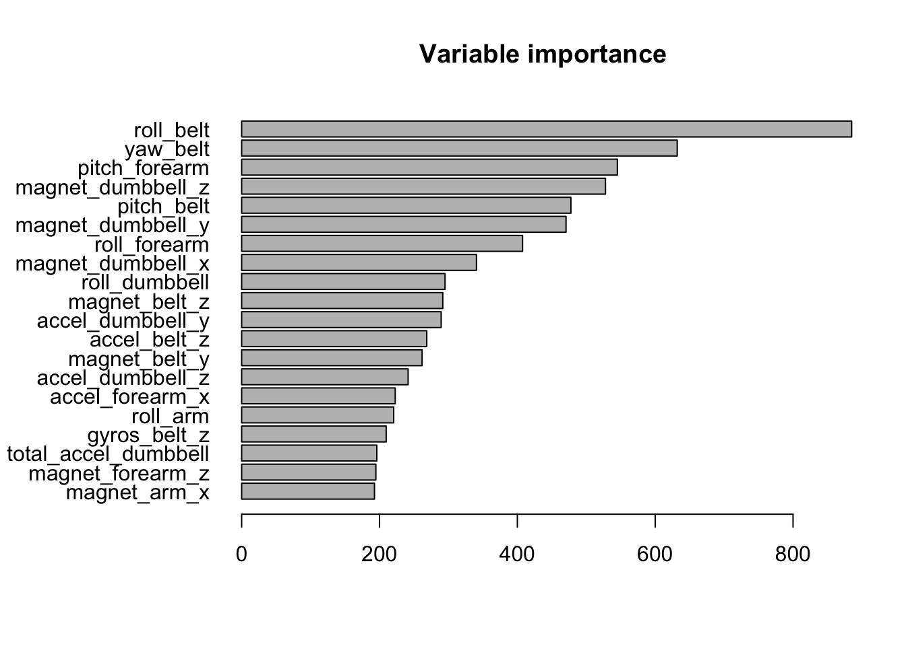

Six participants were asked to perform a series of simple exercises (lifting a dumbbell) in five different ways, labelled A-E. One of these techniques was the “correct” way of lifting, the remaining four ways were representative of common mistakes. Sensors (gyroscope, accelerometer, magnetometer) in the participants’ dumbbell, glove, forearm and belt recorded various quantities (roll, pitch, yaw, amplitude, acceleration, kurtosis, skewness) during each set of manouevres. Given these data, is it possible to train a model to recognise which movements are correct, and which are incorrect?
A training dataset was provided, containing 19,622 observations of 124 features. Many of these features showed little or no variance over the course of the test, and so were removed from the dataset. Similarly many features were not recorded (NAs), and were also removed.
setwd('.')
library(caret); library(doParallel); library(randomForest)
# Read the provided training and test sets
training <- read.csv('pml-training.csv',na.strings=c("","NA","NaN","#DIV/0!"),stringsAsFactors = FALSE)
testing <- read.csv('pml-testing.csv',na.strings=c("","NA","NaN","#DIV/0!"),stringsAsFactors = FALSE)
# Remove variables with near-zero variance, which are unlikely to contribute much to the model
nzv<-nearZeroVar(training)
training<-training[, -nzv]
testing<-testing[, -nzv]
# Strip out the unmeasured variables, keeping the good data
goodTrain <- training[,c(7:10,33:45,47:55,66:68,81,92:103,113,115:124)]
goodTest <- testing[,c(7:10,33:45,47:55,66:68,81,92:103,113,115:124)]
# 'classe' is the labeling of the movements (the outcome we are trying to predict). Make this a factor with levels A, B, C, D, E.
goodTrain$classe <- as.factor(goodTrain$classe)Since the test dataset does not contain any classifications, the training set was partitioned in order to provide a validation set on which to test the model.
dpIndex <- createDataPartition(y=goodTrain$classe, p=0.70, list=FALSE )
trainPart <- goodTrain[dpIndex,]
validPart <- goodTrain[-dpIndex,]Exploring the data a little, it seemed clear that since many measurements are clustered when segmented by classe, some kind of hierarchical tree method (e.g., Random Forest) would be appropriate.
names(trainPart)## [1] "roll_belt" "pitch_belt" "yaw_belt"
## [4] "total_accel_belt" "gyros_belt_x" "gyros_belt_y"
## [7] "gyros_belt_z" "accel_belt_x" "accel_belt_y"
## [10] "accel_belt_z" "magnet_belt_x" "magnet_belt_y"
## [13] "magnet_belt_z" "roll_arm" "pitch_arm"
## [16] "yaw_arm" "total_accel_arm" "gyros_arm_x"
## [19] "gyros_arm_y" "gyros_arm_z" "accel_arm_x"
## [22] "accel_arm_y" "accel_arm_z" "magnet_arm_x"
## [25] "magnet_arm_y" "magnet_arm_z" "roll_dumbbell"
## [28] "pitch_dumbbell" "yaw_dumbbell" "total_accel_dumbbell"
## [31] "gyros_dumbbell_x" "gyros_dumbbell_y" "gyros_dumbbell_z"
## [34] "accel_dumbbell_x" "accel_dumbbell_y" "accel_dumbbell_z"
## [37] "magnet_dumbbell_x" "magnet_dumbbell_y" "magnet_dumbbell_z"
## [40] "roll_forearm" "pitch_forearm" "yaw_forearm"
## [43] "total_accel_forearm" "gyros_forearm_x" "gyros_forearm_y"
## [46] "gyros_forearm_z" "accel_forearm_x" "accel_forearm_y"
## [49] "accel_forearm_z" "magnet_forearm_x" "magnet_forearm_y"
## [52] "magnet_forearm_z" "classe"featurePlot(x=trainPart[,c("roll_dumbbell","pitch_dumbbell","yaw_dumbbell","total_accel_dumbbell")],y=trainPart$classe,plot="pairs")
Using a Random Forest classification model, we can fit classe as a function of all the other variables. Performing the fitting in parallel helps to speed up the process. Fitting with 200+ trees, multiple times, produces an accuracy of 99+%:
registerDoParallel(2, cores=2)
rf <- foreach(ntree=rep(300, 3), .combine=randomForest::combine, .packages='randomForest') %dopar% {
randomForest(trainPart[,c(1:ncol(trainPart)-1)], trainPart$classe, ntree=ntree)
}
predForValid <- predict(rf, newdata=validPart)
confusionMatrix(predForValid,validPart$classe)## Confusion Matrix and Statistics
##
## Reference
## Prediction A B C D E
## A 1673 4 0 0 0
## B 0 1134 7 0 0
## C 0 1 1017 15 1
## D 0 0 2 949 3
## E 1 0 0 0 1078
##
## Overall Statistics
##
## Accuracy : 0.9942
## 95% CI : (0.9919, 0.996)
## No Information Rate : 0.2845
## P-Value [Acc > NIR] : < 2.2e-16
##
## Kappa : 0.9927
## Mcnemar's Test P-Value : NA
##
## Statistics by Class:
##
## Class: A Class: B Class: C Class: D Class: E
## Sensitivity 0.9994 0.9956 0.9912 0.9844 0.9963
## Specificity 0.9991 0.9985 0.9965 0.9990 0.9998
## Pos Pred Value 0.9976 0.9939 0.9836 0.9948 0.9991
## Neg Pred Value 0.9998 0.9989 0.9981 0.9970 0.9992
## Prevalence 0.2845 0.1935 0.1743 0.1638 0.1839
## Detection Rate 0.2843 0.1927 0.1728 0.1613 0.1832
## Detection Prevalence 0.2850 0.1939 0.1757 0.1621 0.1833
## Balanced Accuracy 0.9992 0.9971 0.9939 0.9917 0.9980The confusion matrix tells us that the out-of-sample error rate is 31/6885, or 0.5%. Having fitted a model, we can identify the most significant variables:
varImpForModel <- varImp(rf)
par(mar=c(5,9,4,2)+0.1)
barplot(varImpForModel[order(varImpForModel[1],decreasing = TRUE)[20:1],1], main = "Variable importance",horiz=TRUE,names.arg=rownames(varImpForModel)[order(varImpForModel[1],decreasing = TRUE)[20:1]],las=1)
We can now apply the model to the testing data that was witheld until now:
predForTest <- predict(rf, newdata=goodTest)
predForTest## 1 2 3 4 5 6 7 8 9 10 11 12 13 14 15 16 17 18 19 20
## B A B A A E D B A A B C B A E E A B B B
## Levels: A B C D E